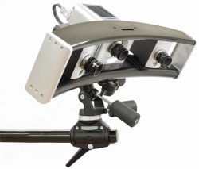
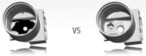
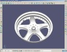
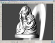
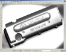
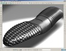
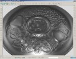
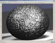
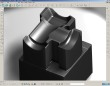
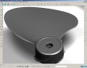

Rexcan III
Yüksek çözünürlüklü ve iki kameralý tarayýcýlarý ile yüksek hassasiyet saðlayan Rexcan III ve DS serisi optik tarayýcý sistemler, kolay kullaným ve hýzlý ölçümleme (kalibrasyon) sürelerinin yanýnda, her lens seti ile 4 farklý alan tarama özelliði ile de kullanýcýlarýna büyük avantajlar saðlar.
Kullanýcýya saðladýðý avantajlar:
- Geliþmiþ yüksek hassasiyet ile daha fazla detay,
- Yüksek çözünürlük ve iki kameralý sistem,
- Kolay, hýzlý kullaným ve ölçümleme (kalibrasyon),
- Tek lens seti ile 4 farklý alan, bir sistem ile 20 farklý tarama alaný,
- ARX otomasyon sistemi ile tam otomatik tarama,
- Geliþtirilmiþ derinlik/çap oraný ile objeler üzerinde bulunan derin alanlarýn 10 derece taranabilmesi (derinlik/çap oraný > 1,5);
 |
Tarama açýsý 25° |
Tarama açýsý 10° |
|
| Solutionix ürünleri hakkýnda detay bilgilere www.cagcadcam.com web sitesinden ulaþabilir, servis büro tarama hizmetlerimiz hakkýnda bilgi almak için ÇAÐ CAD/CAM ile temas kurabilirsiniz. |
|
|  |
|  |
|  |
|  |
|  |
|  |
|  |
|  |
|